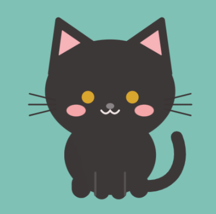

貓的工作室
貓的工作室拍得太遠、太斜或局部被遮住，都可能讓花紋辨識失準。
尚未選擇照片。正面照必填，其他角度可以慢慢補。
先選好照片，按「開始畫貓」才會一起分析。建議使用正面且身體朝前的照片；Gemini 會幫你調好毛色、花紋、眼睛、耳朵和尾巴。再補左側、右側、背面照片，走路和轉身時的花紋也會跟真的一樣。
※ 花紋和外觀是 AI 生成的，不一定準確，可以用筆刷、換色塊、刪色塊手動微調。
選好圖形後，在左邊的貓身上按住拖曳再放開，就能畫出形狀；畫圓圈、方塊或三角形會比手畫穩很多。
先在 AI 畫貓上傳照片，或另外加入一張參考圖片。
在左邊的貓身上直接畫花紋，畫到身體外面的部分會自動隱藏。
剪耳是 TNR 的剪耳標記；有受過傷的貓，可以把單邊設成「沒有耳朵」。
這些會影響〚貓代詞〛在「貓咪的家」裡的反應：被摸、被抱、走動和睡覺。
點一下照片，或在手機上長按想要的顏色，再按「用這個顏色當筆刷」。
金鑰只存在這台裝置的瀏覽器，不會上傳到 GitHub 或雲端，換裝置要重新貼一次。清空金鑰欄再按儲存就會刪除。
每一種叫聲都可以放你家貓的錄音（錄一段或選檔案，10 秒以內），每一列可以切換用「預設」還是「我的」。錄音只存在你的帳號，別人聽不到。
沒有錄音的種類：
選一個地點，會從網路上抓那裡現在的天氣（免費的天氣服務，不需要金鑰）。
兩邊同時開著會互相覆蓋，新增的記憶、設定可能會不見。為了保護你的資料，這台已經先暫停同步。
建議：只留一台開著，另一台把網頁關掉。
寫下來送出，網站作者會看到。
發布後，所有人打開網頁時上方會出現這則公告，按「知道了」就會收起來。新公告會再出現一次。
都可以不填，填了會自動儲存。性別、品種、年紀這些，〚貓代詞〛說話時也會參考。
每天發生的事會偷偷記下來，隔天打開時〚貓代詞〛會寫成一篇日記。
你平常跟〚貓代詞〛說的話會在背景慢慢整理成記憶，〚貓代詞〛說話時會參考這些。記錯的可以按 ✕ 刪掉。
沒有登入的話，你捏的貓、個性和記憶只會存在這台裝置的這個瀏覽器。換手機、換瀏覽器、用無痕視窗或清除瀏覽資料，〚貓代詞〛就會不見。
用 Google 登入後，〚貓代詞〛會存到雲端，任何裝置登入都找得到〚貓代詞〛。
金鑰會存在這個瀏覽器裡，之後用這台裝置、這個瀏覽器的人，都可能看到或用掉你的額度。